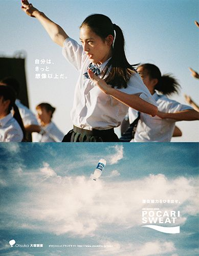
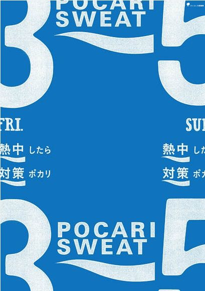
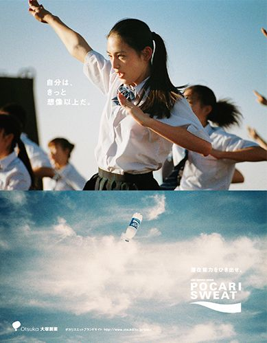
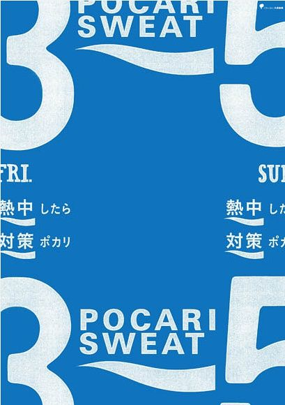

JAGA CAIRAN TUBUH
di Jepang mengandung isotonik sebagai pengganti cairan
tubuh yang hilang. Memiliki rasa yang ringan, tidak
berkarbonat dan sedikit meninggalkan sensasi jeruk
saat diminum.

|

|

|

|

 

Have question?
here are some
answer
Apakah yang dimaksud dengan minuman isotonik?
Minuman isotonik adalah minuman yang
memiliki kadar gula garam yang sama dengan kadar gula garam cairan tubuh. Dengan persamaan kadar
tersebut, maka tekanan cairan yang diberikan akan sama dengan tekanan cairan tubuh, yang
berpengaruh terhadap kecepatan penyerapan.
Apa itu ion? Apa bedanya dengan elektrolit?
Ion adalah bagian dari elektrolit, yaitu
garam-garam mineral yang secara alami ada di dalam tubuh kita. Elektrolit di dalam tubuh kita
akan terurai menjadi ion, baik yang bermuatan positif dan negatif dan penting untuk membantu
semua proses yang ada di dalam tubuh. Elektrolit ini tidak dapat diproduksi sendiri oleh tubuh,
jadi memang harus dapat asupan dari luar lewat makanan / minuman.
Apa buktinya bahwa tubuh kita mengandung elektrolit?Cairan tubuh kita memiliki rasa asin (misalnya air mata dan keringat).